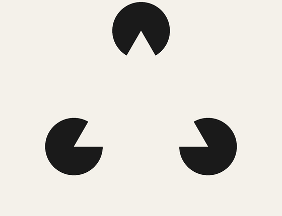

Your brain is guessing
You do not see the world so much as your brain's best prediction of it, with the senses arriving mostly to correct the guess. Here are three illusions you can run on yourself in the next two minutes, and the science of why perception is built this way.

Look at the picture above. Most people see a bright white triangle sitting on top of three black discs, its edges sharp, its surface a touch whiter than the paper around it. Now try to point to one of those edges. There is nothing there. No line was drawn. The triangle, its borders, and its faint glow are all added by your brain, which took three notched circles and decided the simplest explanation was a triangle laid over them.
This is not a trick your eyes fell for by accident. It is a small window onto how perception works all the time. The old picture of seeing, the one most of us carry around, is that light hits the eye, the signal travels up to the brain, and the brain reads it out like a screen. The reality runs closer to the opposite direction. Your brain is constantly generating a model of what is out there, pushing that prediction down toward the senses, and using the actual sensory input mostly to check and correct the guess. What you experience is the guess, once the corrections have been folded in.
That sounds like philosophy until you feel it happen. So before the mechanism, three demonstrations you can run on yourself.
Three things you cannot trust
Your blind spot. Every eye has a hole in its field of view. Where the optic nerve leaves the back of the eye, at a spot about fifteen degrees off to the side of center, there are no light-sensing cells at all, so a chunk of the world simply is not recorded. You never notice, because your brain paints over the gap with whatever surrounds it. And it is genuinely painting, not just ignoring. When researchers placed a patch of visual texture around a blank region, people reported the blank filling in with the surrounding pattern within seconds, an active construction rather than a passive blur. You walk around all day with a hole in each eye and see a seamless world, because the seamlessness is manufactured.
The floating triangle. That is the Kanizsa figure at the top of this piece. The interesting part is not that you see a shape that is not there. It is where in the brain that shape shows up. When monkeys view illusory contours like these, neurons in the primary visual cortex, the very first cortical stop for signals from the eye, respond to the illusory edge as if an edge were there, though more weakly than they do to a real line. The response to the imaginary contour arrived in V1 about a tenth of a second after the image, roughly thirty milliseconds later than the response in the next area up, V2, which is the fingerprint of information flowing backward, from higher areas down to lower ones. The edge is being written in by feedback.
Two identical grays. In Edward Adelson's checker-shadow image, a light square in shadow and a dark square in the open are printed in exactly the same shade of gray, and almost nobody can see it. Your brain knows shadows make things look darker than they are, so it quietly discounts the shadow and reports the square as lighter than the pixels say. Even after you cover everything but the two squares and confirm they match, the illusion snaps right back the moment you uncover the image. Knowing the truth does not buy you out of the guess.
Predictions go down, surprises come up
The idea underneath all of this has a name, predictive coding, and a founding paper. In 1999 Rajesh Rao and Dana Ballard built a computer model of the visual system with a simple rule. Each layer of the hierarchy sends its best prediction down to the layer below, and each layer sends back up only the part the prediction got wrong, the error. Not the whole picture, just the surprise. When the prediction is good, almost nothing travels upward, because there is nothing to report.
What made the model more than a neat idea is that it reproduced puzzling features of real neurons without being told to. A classic example is end-stopping, where a neuron that fires happily for a short bar goes quiet when the bar is extended past its little patch of the visual field. In the standard reading that needs a special inhibitory circuit. In Rao and Ballard's model the quieting falls out for free. A long, straight edge is exactly what the higher layers predict, so the extension carries no surprise, and a system that only passes surprise upward stays quiet. The neuron is not failing to respond. It is telling you the guess was right.
Turn that rule around and the illusions stop being oddities. The blind spot fills in because the surrounding pattern makes the gap predictable, so the brain reports the prediction. The Kanizsa triangle appears because a triangle is the tidiest explanation for three convenient notches, so the brain draws the edges it expects. The gray square looks lighter because a lifetime of shadows predicts that a surface in shade is reflecting more light than it seems to. In every case you are seeing the model, not the input. As a large 2018 review in Trends in Cognitive Sciences put it, expectations do not just bias what you decide you saw after the fact. They reach into perception itself.
How we know it is more than a good metaphor
Predictive coding is a tidy story, and tidy stories about the brain deserve suspicion. So here is the harder evidence that predictions are physically shaping what early sensory areas do, not just how we talk about them.
Start with expectation in the primary visual cortex. In a 2012 experiment, a cue told people which of two gratings was likely to appear next. When the expected grating showed up, the overall response in V1 got smaller, which sounds like less seeing. But when the researchers looked at the pattern of activity rather than its size, the expected grating was represented more sharply, easier to read off from the neural activity, not harder. Expectation lowered the volume and improved the signal at the same time. That is the exact signature predictive coding calls for, a system that spends less energy on what it already predicted while representing it better.
A second line comes from a humble, well-known effect. Show someone the same face twice and the brain's response to the second showing is weaker, a phenomenon called repetition suppression that was long chalked up to neurons simply tiring. In 2008, Christopher Summerfield and colleagues showed it is not fatigue. When a repeat was made unlikely, so that seeing it again was a surprise, the suppression shrank. The dampened response was tracking whether the repetition was expected, not just whether it happened. A repeat you saw coming is a fulfilled prediction, and the brain treats it as old news.
The cleanest evidence, though, comes from turning the prediction machinery down and watching an illusion weaken. In the hollow-mask illusion, the inside of a mask, physically concave, looks like a normal face bulging outward, because your prior for faces is so strong it overrides the depth cues telling you the surface curves away. People with schizophrenia are famously harder to fool by this illusion. They are more likely to correctly see the hollow side as hollow. A 2009 brain-imaging study traced that difference to weaker top-down coupling, the downward flow of prediction pressing on the sensory evidence being softer than in other people. When the prior loosens its grip, the world looks a little more like the raw input and a little less like the guess. That is predictive coding running in reverse, and you can measure it.
Where the idea gets oversold
Now the fine print, because this is where careful and careless coverage part ways. Everything above is about specific, testable claims. Expectations measurably reshape activity in V1. Illusions track the strength of your priors. Early visual cortex represents edges that were never drawn. Those findings are solid and have held up across labs.
There is a much bigger claim in the neighborhood, and it is the one you should hold at arm's length. Some researchers argue that the entire brain is, at bottom, a single prediction-error-minimizing machine, and that this one principle explains perception, action, attention, learning, even emotion and mental illness, top to bottom. It is an elegant, influential framework. It is not settled fact. Critics have pointed out that a flexible enough Bayesian model can be fitted to almost any result after you observe it, by choosing the right assumptions, which makes it easy to explain everything and hard to prove wrong. Others raise a blunter objection, sometimes called the dark room problem. If the brain only wanted to minimize surprise, the winning move would be to find a dark, silent room and never leave, since nothing there is unpredictable. We obviously do the opposite, and explaining why requires bolting extra assumptions onto the theory, which is a sign it is a scaffold rather than a law.
None of that undoes the illusions. It just means the honest sentence is narrow. The brain leans heavily on prediction, and you can catch it doing so in the earliest, most basic parts of vision. Whether prediction is the master key to the whole mind is a live argument, not a done deal.
You are not watching the world. You are watching your best guess of it, updated only where the guess was wrong.
The bottom line
The reason any of this matters beyond party tricks is that it flips the burden of proof on your own experience. Seeing feels like a report. It is closer to a bet, one your brain places from habit and prior experience and then mostly wins, which is why the world usually looks stable and sharp. The illusions are the rare cases where the bet is visibly wrong and you get to notice the machinery. Most of the time the guessing is invisible precisely because it is so good. Once you know it is there, though, a lot of ordinary things make more sense. Why two people can look at the same scene and see different things. Why expectation can make a symptom or a taste or a threat feel more real. Why you cannot simply decide to see the two grays as the same. The picture in your head is not a window. It is your brain's running model of the world, and it is guessing, all the time, whether you asked it to or not.